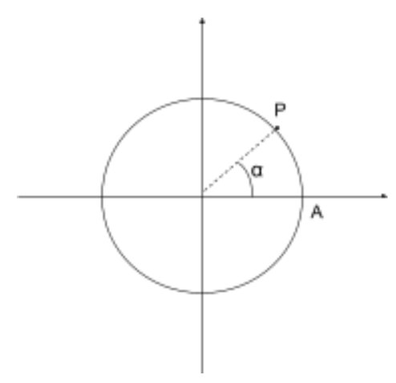
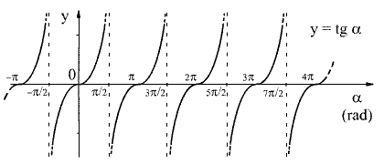

Per descrivere la posizione del punto considerando un solo parametro (r=raggio) ci sono due modi:

1) mediante l’angolo α misurato in gradi (°).
2) Fornendo la misura dell’arco orientato che, partendo dal punto A arriva fino al punto P misurato in radianti.
Supponiamo che l’arco abbia lunghezza l e che il raggio della circonferenza abbia lunghezza r, allora la lunghezza
dell’arco AP i radianti si ottiene facendo il rapporto tra la lunghezza dell’arco e la lunghezza del raggio
(misurati con la stessa unità di misura).
$$AP_{RAD}=\frac{l}{r}$$
αrad : α° = 2π : 360 ← misura angolo giro in gradi
misura angolo giro in radianti
OA = 1 data una circonferenza goniometrica, si definiscono
cos α: funzione che ad un angolo α associa il valore
dell’ascissa del punto P individuato dall’angolo → cos α = xP
All’ampiezza di un angolo viene associato un numero reale compreso tra -1 e 1
sin α: funzione che ad un angolo α associa
il valore dell’ordinata del punto P individuato dall’angolo → sin α = yP
All’ampiezza di un angolo viene associato un numero reale compreso tra -1 e 1
Se la circonferenza ha raggio ≠ 1 allora $$cos α=\frac{xP}{r}$$ $$sin α=\frac{yP}{r}$$
Se α=0 allora cos α = 1 e sin α = 0
Se 0<α<π/2 allora 0 < cos α < 1 e 0 < sin α < 1
Se α=π/2 allora cos α = 0 e sin α = 1
Se π/2<α<π allora -1 < cos α < 0 e 0 < sin α < 1
Se α=π allora cos α = -1 e sin α = 0
Se π<α<(3/2)*π allora -1 < cos α < 0 e -1 < sin α < 0
Se α=(3/2)*π allora cos α = 0 e sin α = 1
Se (3/2)*π<α< 2π allora 0 < cos α < 1 e -1 < sin α < 0
Se α=2π allora cos α = 1 e sin α = 0
NB: I valori assunti dalla funzione seno e dalla funzione coseno sono compresi tra -1 e 1
-1 < cos α < 1 e -1 < sin α < 1
La funzione cos x è periodica nel periodo 2π
cos x = cos(x + 2kπ) k ∈ Z
Il grafico completo della funzione coseno si chiama COSINUSOIDE e si ottiene ripetendo il grafico relativo
all’intervallo [0;2π] infinite volte
D: R
C: [-1;1]
funzione periodica → cos x = cos (x + 2kπ)
funzione pari → cos (-x) = cos (x)
La funzione seno è una funzione periodica di periodo 2π
sin x = sin(x + 2kπ) k∈Z
Il grafico completo della funzione seno si chiama SINUSOIDE e si ottiene ripetendo il grafico relativo
all’intervallo [0;2π] infinite volte.
D: R
C: [-1;1]
funzione non inettiva
funzione dispari → sin (-x) = -sin (x)
Per il teorema di Pitagora si possono scrivere le seguenti relazioni:
Dato un angolo orientato α
tan α è la funzione che associa ad α il rapporto, quando esiste, fra l’ordinata e l’ascissa del punto P

$$tan α=\frac{PA}{OP}=\frac{sin α}{cos α}$$
$$angolo \frac{π}{6}$$
$$angolo \frac{π}{4}$$
$$angolo \frac{π}{3}$$
Un’equazione goniometrica contiene almeno una funzione goniometrica che ha come argomento l’incognita.
Preso un qualsiasi alfa nel primo quadrante ci sono 3 angoli che hanno lo stesso seno e lo stesso coseno di alfa eventualmente cambiati di segno.
In un triangolo rettangolo:
In un triangolo rettangolo:
CATETO = IPOTENUSA * cos angolo adiacente
CATETO = IPOTENUSA * sin angolo opposto
In un triangolo rettangolo:
CATETO = ALTRO CATETO * tan angolo opposto
Risolvere un triangolo rettangolo significa determinare la misura dei suoi 3 lati e l’ampiezza dei suoi angoli conoscendo 1 lato ed un altro dei suoi elementi (o un altro lato o un altro angolo).
In un triangolo le misure dei lati sono proporzionali ai seni degli angoli opposti.$$\frac{a}{sin Œ±}=\frac{b}{sin ùõΩ}=\frac{c}{sin …£}$$ $$\frac{a}{b}=\frac{sin Œ±}{sin ùõΩ}$$ $$\frac{a}{c}=\frac{sin Œ±}{sin …£}$$ $$\frac{b}{c}=\frac{sin ùõΩ}{sin …£}$$
In un triangolo il quadrato della misura di un lato √® uguale alla somma dei quadrati delle misure degli altri due lati meno il doppio prodotto delle misure di questi due lat per il coseno dell‚Äôangolo compreso tra gli assi. $$a^2=b^2+c^2-2bc*cos Œ±$$ $$b^2=a^2+c^2-2ac*cos ùõΩ$$ $$c^2=a^2+b^2-2ab*cos …£$$